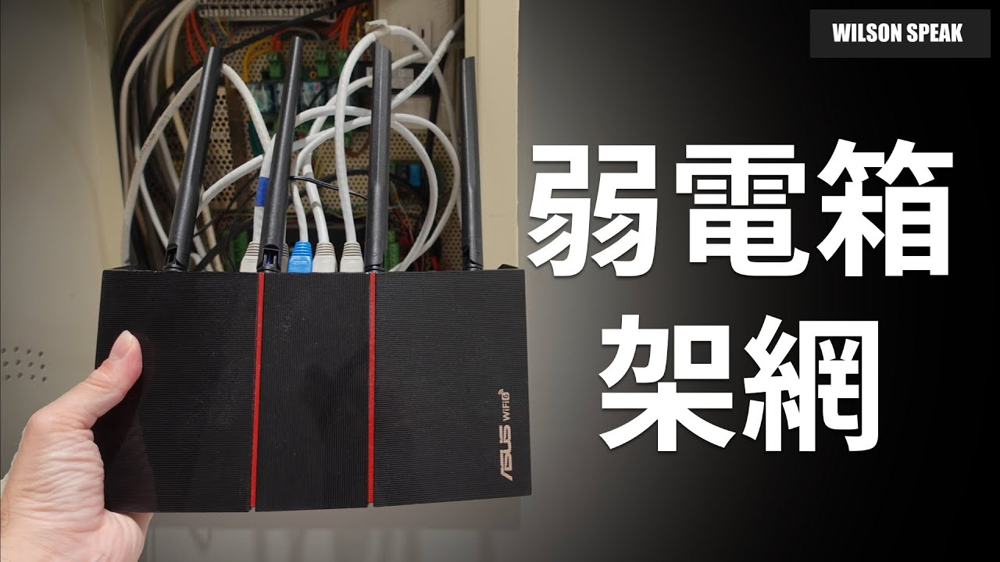

路由器要塞弱電箱嗎？新家網路先分清楚配線和 Wi-Fi

原片發布 2022-09-02 · 點封面看原片。
新家網路線都收到弱電箱，設備也全塞進去，看起來很整齊，但房間的 Wi-Fi 不一定因此變好。箱體材質、擺放位置和隔間，都可能讓無線覆蓋吃虧。先把收線與發訊號兩件事分開想，規劃會清楚很多。
這篇延伸自 Wilson 2022 年的新家網路影片，整理配線時值得先畫出的路徑。不同房子的預留線路和業者設備不同，以下是規劃原則，實際施工仍要對照現場與設備文件。
弱電箱方便收線，不等於適合發 Wi-Fi
弱電箱適合集中整理線路，是否適合放網路設備，還要看尺寸、通風、供電與維護空間。金屬箱體和櫃門會影響無線訊號，但不能只看「有沒有弱電箱」就推斷全屋一定收不到訊號。
若有線功能放箱內比較方便，可以讓路由與無線覆蓋分工：主路由安排對外連線，室內的 AP 或相容 Mesh 節點負責 Wi-Fi。先確定替代訊號點已運作，再評估箱內設備的無線功能是否需要保留。
先決定主路由在哪裡，再畫 WAN 和 LAN
先認出誰在當主路由、誰在處理上網認證，以及業者的設備目前採什麼模式。WAN 是朝外網的一側，LAN 是家用網路的一側；不要只憑孔的顏色或設備名稱決定接法。原本的電視、電話等服務也要一起記錄。
主路由放客廳、房間線卻都回弱電箱時，要規劃外網送到客廳 WAN 的路徑，以及 LAN 回箱內交換器的路徑。現有線路不足時，先請懂佈線的人評估，不要用一般 Y 分接頭硬把兩種網路混在一起。
- 畫出業者設備、主路由、交換器和各房間的實際接線。
- 在線材兩端標記去向，分清楚 WAN 與 LAN。
- 確認預留線路能否支撐規劃，再決定設備位置。
邏輯順序示意，不代表設備都要放同一處。主路由在客廳時，要另外規劃 WAN 去程與 LAN 回程。
交換器接哪一側，比埠數更先要想
一般家用網路若由一台主路由管理，房間的交換器通常放在它的 LAN 側，再分到各個房間。這樣接入的設備才會依主路由的設定加入家用網路；交換器本身不會自動取代上網認證、NAT 或路由的工作。
業者設備已經負責路由時，後面的 Wi-Fi 設備可能適合採 AP 模式。若又開一層路由，可能形成雙重 NAT。先確認現有拓樸，再看是否需要改模式；不是看到兩台盒子就一定要把其中一台關掉。
把無線訊號點放到真的有人用的地方
無線訊號點應放在實際有人使用的區域，再由牆內網路線接回家用網路。優先試客廳、走道等較開放的位置，避開大型金屬物與被家具包住的角落。訊號怎麼走仍要現場測，不能假設它一定朝某個形狀均勻擴散。
使用 AP 或有線回程 Mesh 前，確認型號支援的模式、接孔和拓樸。供電也要另外確認：網路線插上，不代表設備一定有電；PoE 必須由相容的供電端與設備配合，不能任意混接。
整理線路，也要留散熱和維護空間
箱內設備堆疊、散熱孔被線材蓋住，都可能影響穩定度。留多少空間要依廠商規範與現場條件，不能用一個通用數字套全部機器。發現斷線時也要查紀錄與電源，不能直接認定只是過熱。
收線時保留可維護的長度，不要硬折接頭、夾住線材或讓重量拉扯孔位。變壓器、插座與強電配線的變更交給合格人員，別為了關上箱門就勉強塞入不合適的設備。
完工後逐間驗收，別只測箱子旁邊
完工後，先逐個房間確認牆面孔是否通、鏈路協商速度是否符合沿途設備，再測日常工作。只在箱子旁測一次上網速度，無法驗收房間的配線，更無法代表床邊或書桌的 Wi-Fi。
同一房間有線正常、無線差，先沿無線接入這一段查訊號、干擾與裝置；兩者都差，再回頭比較共同經過的設備和上游。這是縮小範圍的線索，仍要透過重複測試確認。
- 逐間測試有線孔，記錄連接設備與協商速度。
- 在常用位置測 Wi-Fi 和實際視訊、傳檔工作。
- 驗收電視、電話及其他原有服務，留下接線紀錄。
你可能還想問
Mesh 主機一定不能放弱電箱嗎？
要看它負責什麼工作，以及箱內條件。如果倚靠這台提供無線覆蓋或無線回程，封閉金屬環境就值得避開。若主要做有線路由，則另看供電、散熱與外部訊號點的配置。
改 AP 模式後，部分功能為什麼不見了？
AP 模式通常把路由和位址分配交給上游設備，因此部分路由、安全或 QoS 功能可能不提供。實際差異依機型與韌體，要先查官方模式說明。
只有一條線到客廳，還能照這個方式接嗎？
先把 WAN 去程、LAN 回程與現有業者服務畫清楚。不要直接套用需要兩條獨立路徑的接法。可以調整主路由位置或請專業人員評估佈線，進階網路分流也需要完整規劃。
影片與參考資料
原片發布 2022-09-02。文章整理 2026-11-14，依影片公開字幕、說明延伸，並以官方資料校訂。實際設定請對照你的型號與版本。